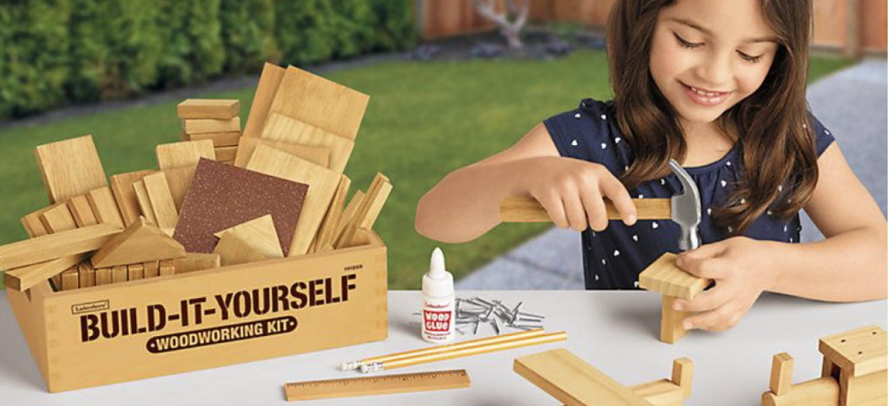
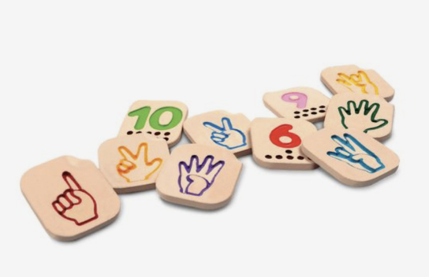
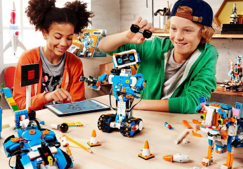
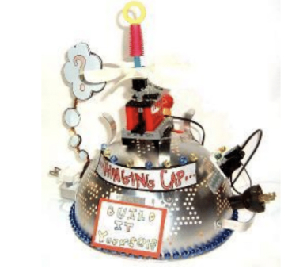
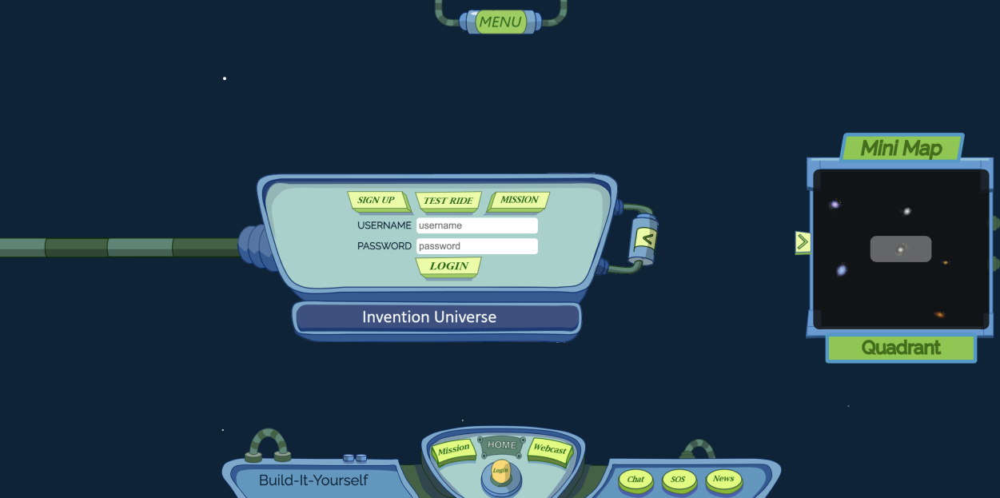

Arts and Technology Programs
Developed by MIT
Developed by MIT
Build-It-Yourself provides unique, playful and creative learning approaches that engage young students in the
blending of art and technology. With our mission as " fun with a purpose", our learning projects are designed
in collaboration with the MIT Media Lab , by professionals who are still kids at heart, kid-tested and
kid-approved.
Build-it-Block
Construction system enables kids to build complex projects quickly through a network of TAs from top-tier
colleges and online workshops and content. This is a series of playful storylines built around relevant social
issues or whimsical scenarios, followed by challenges to use art and technology to help solve problems. Each
project or "Mission" incorporates an artistic element with a building element, as well as stressing the
documentation and presentation of ideas and solutions.

Robots Building Blocks
A part of the thirty 8-week STEAM Build-it-Blocks projects that teach
students how on
software
programming,
including website and game development.
Programming
Building Blocks
A part of the thirty 8-week STEAM Build-it-Blocks projects that teach
students how on
software
programming,
including website and game development.


Arts
Building Blocks
A part of the thirty 8-week STEAM Build-it-Blocks projects that teach
students how on
software
programming,
including website and game development.
Invention Universe
Alongside the STEAM projects, students gain access to Invention
Universe, an online virtual
environment and
community that safely allows young builders to post and share their projects. Students can easily
collaborate
with others and learn from builders around the world. Invention Universe is the perfect place for young
students to build a valuable portfolio for their future.
